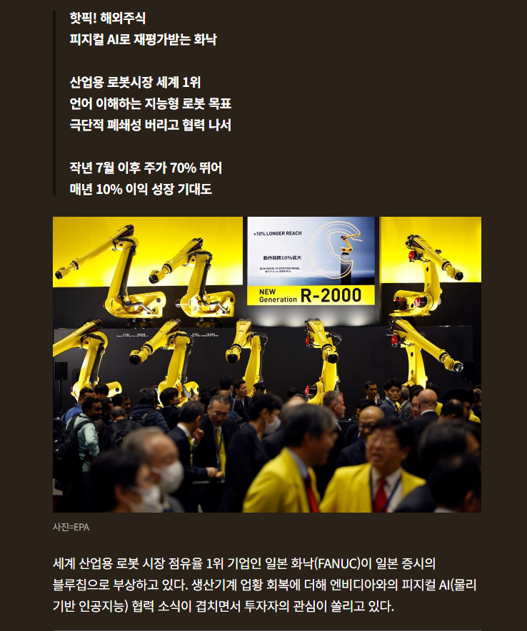
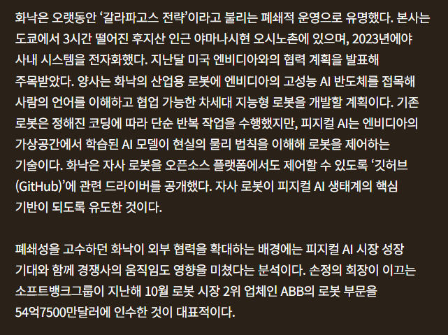
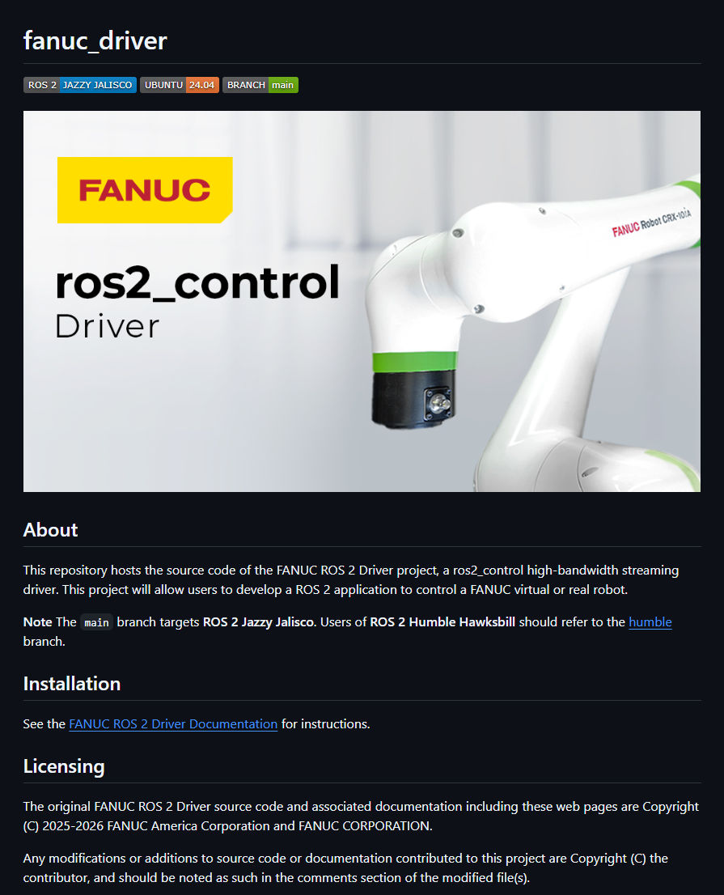

많은 돈앞에는 장사가없는법
엔비디아랑 AI협업한다고 오픈했음 ㅋㅋㅋ

오히려 피지컬AI 협력한다고 화낙 로봇 제어 드라이버(원래는 암호화되어있어서 접근도못함)를 깃헙에 올렸음
갈라파고스 ㄴㄴ 그냥 협력사의 돈이 부족했을뿐임
<추가>

다른개붕이가 api올린거아님? 이라길레 찾아보니까 드라이버 소스코드를 올렸음 ㅋㅋㅋ

많은 돈앞에는 장사가없는법
엔비디아랑 AI협업한다고 오픈했음 ㅋㅋㅋ

오히려 피지컬AI 협력한다고 화낙 로봇 제어 드라이버(원래는 암호화되어있어서 접근도못함)를 깃헙에 올렸음
갈라파고스 ㄴㄴ 그냥 협력사의 돈이 부족했을뿐임
<추가>

다른개붕이가 api올린거아님? 이라길레 찾아보니까 드라이버 소스코드를 올렸음 ㅋㅋㅋ
수정완
시대가 변한거지 뭐
드라이버 소스코드말고 api를 올렸겠지
진짜 소스코드올림 글에도 추가해놨음
로봇의 실제 구동부 드라이버 소스코드는 아니고 로봇을 제어하기 위한 통신 드라이버 소스코드임
핵심은 다 빼먹고 올렸네. 뭐 당연하겠지만
저 정도는 타 회사들도 다 올림
ROS 2 자체가 오픈소스라
ㅇㅇ 근데 타회사들은 하는데 화낙은 그걸안했는데 이번에 오픈소스로 풀어버렸다 이정도임. 그정도로 자기들 제어,통신쪽에 납품사라도 못건드리게 했었다고 들음
화낙도 ROS 2 를 쓴다는 걸 처음 알았네
본인들 로봇제어 프레임워크를 만들어서 쓰다가 오픈소스로 풀었으면 개 대박이었을텐데
???: 우리가 아니면 니들이 누구와 협업을 할 수 있는데?
???: 화낙냐?
드립에 실패했구나
네스티 !

피지컬 AI의 새로운 공룡이 탄생하는 순간이구만
현대차 주가가 오를 일은 이제 없는건가 ㅠㅠ
보스턴다이나믹스 똥줄 타겠네
???: 돈이라니, 나를 모욕하는 겐가!!!
...라고는 할 수 없을만큼 많은 돈이었다
에이아이 올려고 그거 제어가능한 정밀 로봇팔은 화낙만 생산가능
협력이 잘 안된다면 돈이 부족하지 않았나를 생각하게 되는군...
고정된 프로그램제어만 극한으로 갈고닦았는데
왠 미친 로봇새끼가 덤블링하고 택배포장하고있으니 발등에 불떨어진거지 ㅋㅋㅋㅋ
저기 진짜 한국의 탑티어 직장
자리도 나봐야 한자리수라
경쟁이 미쳤다는
막상 다녀보면.. 아니야 ㅠ 진짜 너무너무 힘들어..
근데 뭐 업계 탑인데 안힘들수가있겠어
탑티어 직장이면 다 힘들지 않음?
엔비디아나 테슬라 가면 진짜 다들 열일 한다던데
삼성도 MX는 꿀빤다하고 메모리는 힘들다는거 보면 돈 주는 곳은 다 힘든게 맞는거 같음
이런 소식 신기하긴 하다
화낙의 자신감이자 불안감이지 뭐
기존의 게시물도 다 틀린말이더만
엔비디아랑 서로 협력만하면되는데 왜 코드를 공개한거임?
엔비디아가 딥러닝 기반 로봇제어기술을 가지고 있는데, 화낙은 걍 고전 제어알고리즘 기반임.
엔비디아 알고리즘으로 화낙 로봇 제어하려니 코드를 공개해서 서로 붙여야지
피지컬AI가 제어 플랫폼으로 파이 먹히기전에 그냥 오픈하고 병합해서 주도권계속 가져가겠다는거구만
제어 알고리즘을 오픈소스로 푼게 대단한 결심으로 보임
이걸 풀어버림으로써 산업 전체의 수준이
무섭게 올라가버렸는데
화낙은 그 이상을 바라보고 가능성이 있다고
겐또를 굴리고 선택한거니 ㄷㄷㄷ
고전 제어역학 따위 딥러닝 기반 VLA 앞에서는 꼼짝 못함
그걸 구현하는 로봇제작은 다른이야기 아님?
로봇 구동 알고리즘이 훨씬 더 어려움..
인간 손 같은걸 예로 들면 구동부가 수십개씩 되는데
고전적으로 일일이 제어해서는 절대로 제어 못함
그런 프레임워크 자체가 없음. 왜? 존나 어려워서
화낙도 결국 휴머노이드가 목표일 수 있다는거네
ros 해봐서 알긴함
다관절 제어 들어가는 순간 지옥이긴하지
고전제어역학 위에 VLA가 쌓이는건데..? 유체역학한다고 뉴턴 무시하는꼴
무시는 아님. 성능으로 비교한거
구글은 어디갔지ㄷㄷ
화낙, 키옌스
화낙, ABB, 지멘스, 미쓰비시 중에서 어디가 기술이 제일 좋음?
근데 저래도 화낙꺼 써야함
배터리도 존나게 비싸요 십새기들
해킹당할까봐 연락도 팩스로 한다던 그 회사 아니냐
갔는X 간O